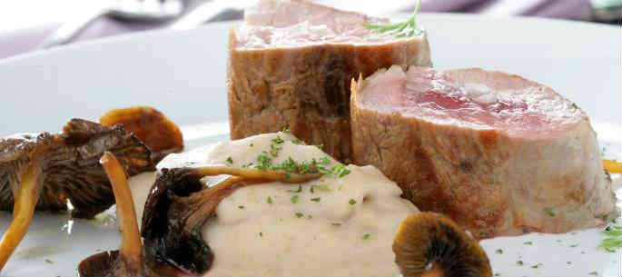

En esta página web explicaremos alguno de los platos que tenemos en el menú.
A continuación mostraré el menú de cada día de la semana
| Lunes | Martes | Miércoles | Jueves | Viernes |
|---|---|---|---|---|
| Sopa Hortelana | Spaghetti Boloñesa | Puré de calabaza | Lentejas | Arroz a la cubana |
| Merluza en salsa | Solomillo de cerdo con puré de castañas | Escalope de pollo | Bacalao Glaseado | Salmón con verdura |
| Natillas | Flan | PanaCotta | Tiramisú | Gató con helado |
Ingredientes:
Elaboración:
Lavar y cortar todas las verduras antes de empezar a cocinar.
A continuación pochar la cebolla ( fuego medio ), una vez pochada
añadir el resto de ingredientes excepto el caldo de pollo.
Una vez las verduras esten echas, añadir el caldo de pollo,
tapar la olla y dejar cocer alrededor de 40/45 minutos.
Consejo:
Añadir sal y pimienta cuando el caldo este hirviendo ya que así coge más sabor
En caso de que hubiese poco caldo de pollo, añadir agua.
Ingredientes:
Elaboración:
Porcionar los solomillos al gusto y macerar con la soja, pimienta y sal durante 30 minutos.
Saltea los solomillos hasta que esten dorados, OJO sin llegar a cocer.
Por otra parte poner agua a hervir y cocer las castañas durante 20 minutos.
Una vez hervidas pélalas de esta forma eliminaremos la piel que nos aporta amargor.
Vierte leche en un bol, añade las castañas y pon a hervir la mantequilla( fuego lento ) para que no se queme,
cuando este la mantequilla fundida añadir al bol anterior e ir triturando hasta conseguir una textura cremosa.
Finalmente, limpia las setas y saltéalas en la sartén.
Consejo:
Si queremos pelar rápido las castañas una vez sacadas del fuego, ponerlas en un bol con agua y hielo.
Para conseguir que los solomillos no cuezan, saltear a fuego fuerte y retirar.

Ingredientes:
Elaboración:
Preparar una cafetera de café y dejar enfriar, después montar las claras a punto de nieve y reservar.
En un bol aparte batir las yemas con el azúcar, añadir el mascarpone poco a poco y batir a poca velocidad,
incorporar las claras e ir mezclando con una espátula realizando movimientos envolventes.
En un molde poner una capa de bizcocho de soletilla y empaparlo de café, lo cubrimos con una capa de mascarpone y
repetir el proceso una y otra vez hasta llegar arriba del molde.
Guardar el bizcocho en la nevera durante al menos 3 horas con la capa de chocolate rallado por encima.
Ingredientes:
Elaboración:
Cortar todas las verduras y sofreir bien.
Mientras se van sofriendo las verduras, tendremos que preparar la calabaza
quitando las semillas y la piel, añadir la calabaza y las patatas terminar de sofreir
y añadir el 1/2L de agua, dejar hervir durante 45min/1hora .
Cuando ya este hervido, triturar con una batidora ( o thermomix ) hasta dejarla bien fina.
Ingredientes:
Elaboración:
Añadir agua en un bol con el arroz y poner a cocer a fuego medio durante 25min.
Realizar las salchicas en otra sarten con un poco de aceite.
Una vez que tenemos las salchicas y el arroz freír los huevos.
Finalmente añadir mantequilla y sofreir el arroz con las salchicas, poner el tomate y añadir el huevo al final.
Para terminar la página web dejaré de muestra una serie de enlaces a otras web's